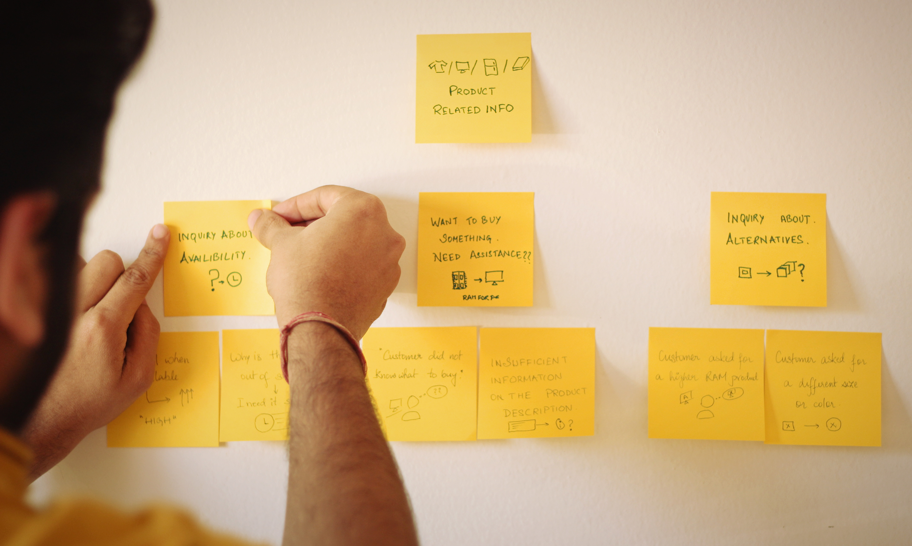
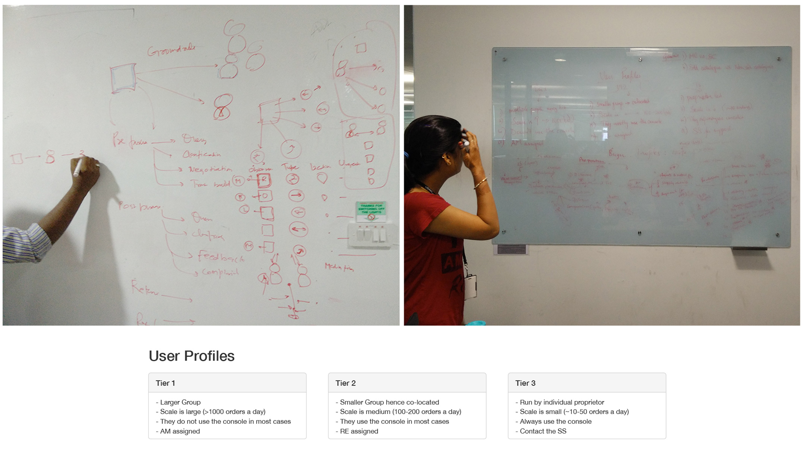
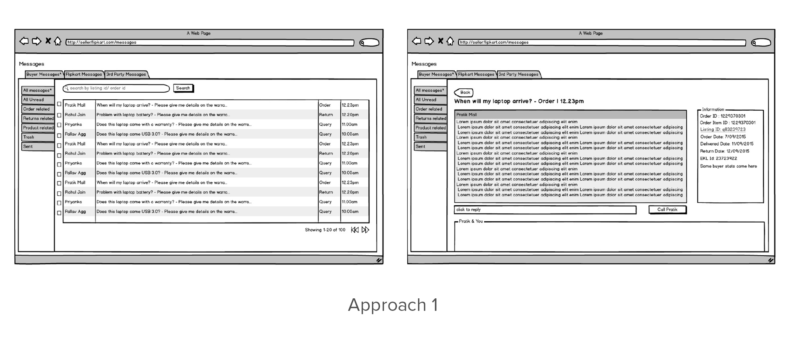
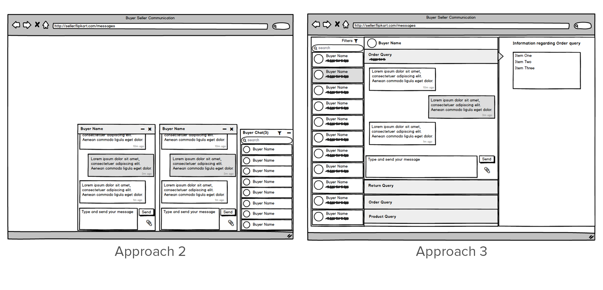
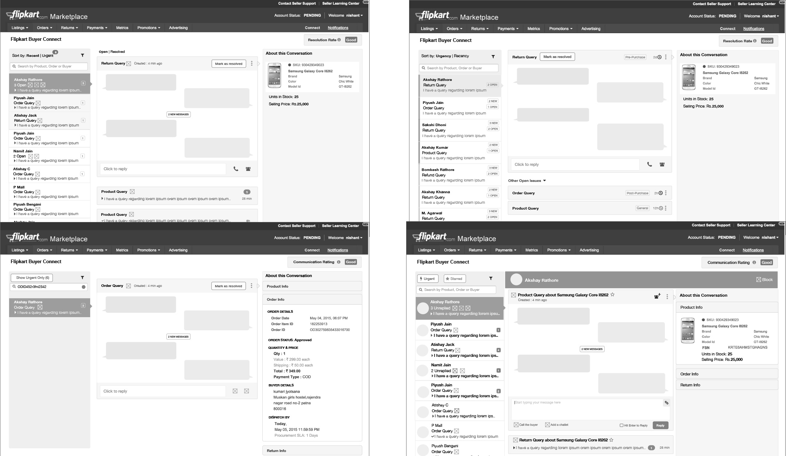
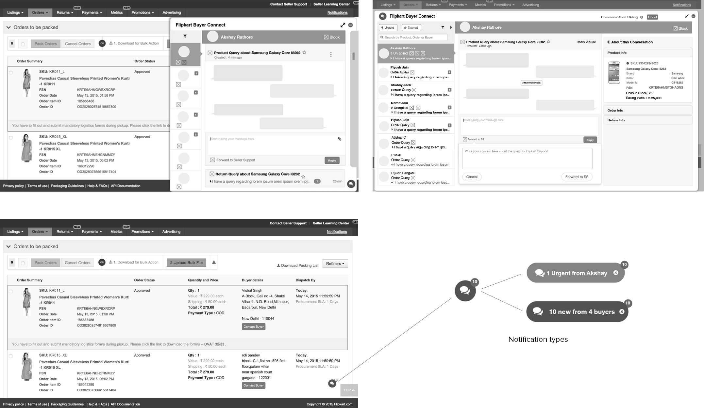

Flipkart - Buyer Seller Communication
A communication channel between sellers and buyers on Flipkart Marketplace.
Duration:
4 months
Type:
Corporate Work
Roles and Responsibilities:
Design Strategy, UX Design, Project Management
Project Presentation
The Problem
Flipkart is an online e-commerce marketplace giant in India. There are numerous concerns for buyers who transact with sellers on Flipkart. All queries of buyers pertaining to transaction with sellers were handled by Flipkart. This led to significant high number of call volumes on their customer care which took a lot of time to be solved or were often were unsolved. There was a need for a communication channel that could connect buyers and sellers and help sellers address to buyer queries in various contexts.
The Solution
Flipkart's Buyer Seller Communication is a online platform for sellers to answer buyer queries in a fast and effective manner. My team focussed on designing the experience on the seller's side.
My Role
I worked on this project with a fellow designer and we followed pair design. We primarily worked with a Product Manager, Director of Products on product strategy and design. The project was very collaborative and we used to have stand-up meetings every alternative day to discuss the progress where we invited different stakeholders. We closely worked with the buyer design team to ensure a seeamless experience for buyers and sellers.
Design Process
Users and Motivation
• Small Businesses- Avenue for growth by increasing sales.
• Large Brands- Maintain customer relationship and brand integrity.
• Buyers- Quick resolution of queries.
Making Sense
We started off with clustering the communication-based issues faced by buyers from data received through the call center and narrowed down to the critical use-cases of the product. 
Understanding use cases and defining goals
Analysing the use cases helped us define the key goals that we wanted to achieve. 
Design Goals
• Scalable for both small and large sellers
- Buyer-centric view
- Cater to large number of buyers and queries
• Quick responses to buyer queries
- Displaying information related to each query in context
- Persuade sellers for responses with incentive
• Improve seller productivity
- Introducing query types and states
- Quick filtering and search of queries
- Navigating between buyer-conversations should be super easy
- Avenues for multitasking
Low-Fi Exploration
To understand the structure and flow of information, we did a few iterations for our approach based on different design patterns. Evaluating each one of these against the design goals, helped us finalize on the approach we wanted to move ahead with. 

Mid-Fi Iterations
After finalizing the approach, we started detailing our designs thorugh iterations for interactions, navigation flow and layout. We came up with different functionalities supporting our goals.

Final Wireframes
After multiple iterations, our design evolved to cater to our design goals with the best possible navigation with simple interactions. Considering an end-to-end experience, we designed the notification system for the product keeping in mind how it would adapt to different notification types.

Visual Design
After a final sign off on the design from the team and engineering, we worked on the Visual Design of the product taking into consideration Flipkart's new visual language guidelines.
Prototyping
Once we were done with the visual designs, I created an Invision Prototype considering edge cases to be handed over to the front-end developers to ensure the development happens smoothly.